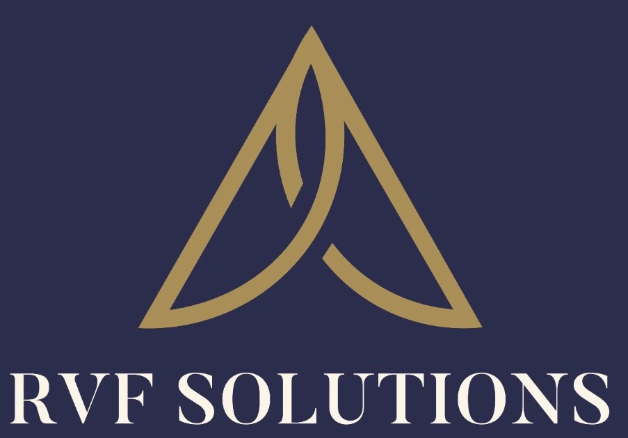

<nav class="navbar">
    <div class="navbar-container">
        <div class="logo">
            
        </div>
        <button class="menu-toggle" id="mobile-menu" aria-label="Abrir menú">
            <span class="bar"></span>
            <span class="bar"></span>
            <span class="bar"></span>
        </button>
        <div class="nav-wrapper">
            <ul class="nav-menu">
                <li><a href="./../index.html" class="nav-link">Inicio</a></li>
                <li><a href="./nosotros.html" class="nav-link">Nosotros</a></li>
                <li><a href="./areasPracticas.html" class="nav-link">Áreas de Prácticas</a></li>
                <li><a href="./equipo.html" class="nav-link">Equipo</a></li>
                <li><a href="#novedades" class="nav-link">Novedades</a></li>
            </ul>
            <div class="social-menu">
                <a href="#" class="social-link" target="_blank"><i class="fab fa-facebook-f"></i></a>
                <a href="#" class="social-link" target="_blank"><i class="fab fa-twitter"></i></a>
                <a href="https://www.instagram.com/rvf_solutions_" target="_blank" class="social-link"><i class="fab fa-instagram"></i></a>
                <a href="https://www.linkedin.com/in/franciso-neftaly-rojas-villeda-142072250?utm_source=share&utm_campaign=share_via&utm_content=profile&utm_medium=ios_app " class="social-link" target="_blank"><i class="fab fa-linkedin-in"></i></a>
            </div>
        </div>
    </div>
</nav>
